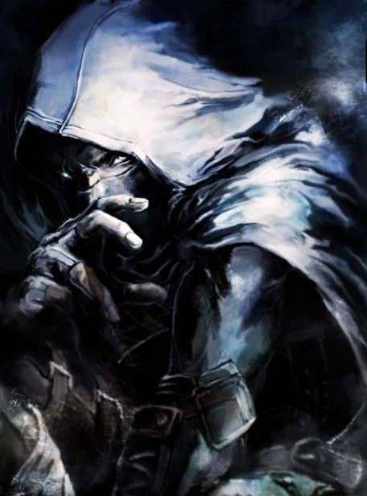

Adepto das Sombras

São ladrões, rufiões e trapaceiros, que vivem do crime e suas consequências por todas as regiões.
Habilidades conhecidas
D - Evasão: O Adepto consegue distorcer sua imagem e se transformar em um borrão, conseguindo evadir-se de um Combate ou Evento, recuando uma casa sem ativar o efeito da mesma. Evasão também pode ser usada em combate para desviar de 1 habilidade. Não pode ser usada em Lordes, Eventos e Guardiões.
D - Esquiva Perfeita: A velocidade de Adepto aumenta em 5x, Os próximos 2 ataques sem ser de Habilidades feitos contra Adepto no combate atual serão esquivados automaticamente.
O - Furto Espectral: A velocidade de Adepto aumenta em 5x, Os próximos 2 ataques sem ser de Habilidades feitos contra Adepto no combate atual serão esquivados automaticamente.